철도신호산업기사 (2005-05-29 기출문제)
1과목: 전자공학
1. 그림과 같은 회로가 발진하기 위한 조건으로 옳은 것은?
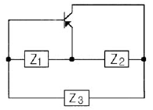
- Z1: 유도성, Z2: 용량성, Z3: 유도성
- Z1: 유도성, Z2: 용량성, Z3: 용량성
- Z1: 용량성, Z2: 유도성, Z3: 용량성
- Z1: 용량성, Z2: 용량성, Z3: 유도성
(정답률: 43%)

2. 연산증폭기의 특징으로 옳지 않은 것은?
- 단일 주파수만을 통과시킨다.
- 전압 이득이 크다.
- 입력 임피던스가 높다.
- 출력 임피던스가 낮다.
(정답률: 30%)
3. 전가산기(full adder)를 가장 올바르게 설명한 것은?
- 자리올림을 무시하고 일반 계산과 같이 덧셈하는 회로이다.
- 전가산기의 자리올림을 더하여 2자리의 2진수의 덧셈을 완전히 하는 회로이다.
- 아랫자리의 자리올림을 더하여 홀수의 덧셈을 하는 회로이다.
- 아랫자리의 자리올림을 더하여 짝수의 덧셈을 하는 회로이다.
(정답률: 34%)
4. 그림과 같은 다링톤(Darlington) 접속방식에서의 전류증폭률은? (단, β1 = 10, β2 = 20 이다.)
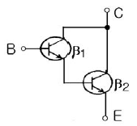
- 20
- 50
- 100
- 200
(정답률: 19%)
5. 주어진 카르노도로 된 함수를 최소화한 부울 대수식은?
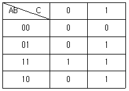
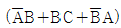
- A B+B C+C A
- A B+C
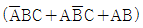
(정답률: 39%)
6. 그림의 반가산기에서 입력이 A=1, B=1일 때 출력 S와 C는 얼마인가?
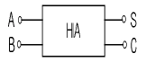
- S=1, C=1
- S=0, C=1
- S=1, C=0
- S=0, C=0
(정답률: 30%)
7. 4족 원소의 첫번째 궤도에는 최대 몇 개의 전자가 들어갈 수 있는가?
- 1
- 2
- 4
- 8
(정답률: 알수없음)
8. 그림과 같은 연산증폭기의 출력전압은?
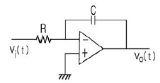
- 출력전압은 입력전압을 미분한 형태로 위상이 반전된다.
- 출력전압은 입력전압을 미분한 형태로 위상이 같다.
- 출력전압은 입력전압을 적분한 형태로 위상이 반전된다.
- 출력전압은 입력전압을 적분한 형태로 위상이 같다.
(정답률: 28%)
9. 주파수 복조회로의 구성에 사용할 수 없는 것은?
- 경사검파회로
- 자승검파회로
- 고주파엠파시스회로
- 포스트실리검파회로
(정답률: 30%)
10. 진성 반도체에 대한 설명으로 옳지 않은 것은?
- 전자의 수와 정공의 수는 원칙적으로 같다.
- 페르미 준위는 금지대 폭의 중앙에 존재한다.
- 진성 반도체에 5가인 불순물을 첨가하면 P형 반도체가 된다.
- 일반적으로 사용되는 반도체는 진성 반도체가 아니라 불순물 반도체이다.
(정답률: 알수없음)
11. 링 변조기의 특징이 아닌 것은?
- 변조신호와 반송파신호가 근접하여 있을 때 유리하다.
- 입력신호보다 출력신호가 크므로 증폭작용을 한다.
- 역방향으로 동작이 가능하다.
- 정류소자로서 사용된다.
(정답률: 19%)
12. 어떤 기준전압 이상 혹은 이하만을 선택하는 회로는?
- 밴드패스필터
- 클리핑회로
- 클램핑회로
- 정류회로
(정답률: 39%)
13. FET의 설명 중 옳은 것은?
- 양극성 소자이다.
- 입력 임피던스가 낮다.
- 열 안정성이 나쁘다.
- BJT보다 이득-대역폭 적(積)이 작다.
(정답률: 28%)
14. 그림과 같은 회로는 무엇인가?
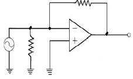
- 단위 이득 폴로워
- 전압 폴로워
- 전류-전압 변환기
- 이상기(phase shifter)
(정답률: 25%)
15. 그림과 같은 발진기의 발진 주파수 fo 는? (단, M은 상호인덕턴스이다.)
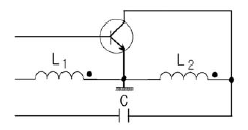
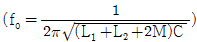
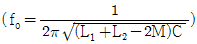
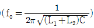
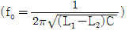
(정답률: 30%)
16. 일반적인 NE 555 IC는 주로 어떤 작용을 하는데 사용되는가?
- 구형파 발진
- 콜피츠 발진
- 하틀리 발진
- 정현파 발진
(정답률: 37%)
17. 다음 중 입력파형을 가장 충실하게 재생할 수 있는 증폭방식은?
- A급
- B급
- C급
- AB급
(정답률: 알수없음)
18. 변조파로부터 신호파를 얻어내는 것을 무엇이라 하는가?
- 발진
- 변조
- 증폭
- 복조
(정답률: 30%)
19. 정류회로에서 맥동률을 적게 하기 위한 방법은?
- 평활용 콘덴서의 용량을 작게 한다.
- 평활용 쵸크 코일의 인덕턴스를 작게 한다.
- 평활용 콘덴서의 용량을 크게 한다.
- 교류입력 주파수를 낮게 한다.
(정답률: 알수없음)
20. 차단과 포화에서 동작될 때 트랜지스터는 무엇 처럼 동작하는가?
- 선형증폭기
- 가변용량
- 스위치
- 가변저항
(정답률: 30%)
2과목: 신호기기
21. NS형 전기선로전환기 설치 및 관리에 관한 사항이다. 잘못 된 것은?
- 전동기의 슬립 전류는 마찰 연축기가 미끄러지기 시작하여 1분이상 경과한 뒤 측정하였을 때 8.5A이하로 한다.
- 쇄정자와 쇄정간 홈과의 간격은 좌우 균등하게 하고 합한 치수가 4mm 이하로 한다.
- 크러치는 봄, 가을 년2회 조정한다.
- 동작 시분은 8초이하 이어야 한다.
(정답률: 알수없음)
22. 변압기의 누설리액턴스는? (단 N을 권수라 한다.)
- N에 무관
- N에 비례
- N2에 비례
- N에 반비례
(정답률: 20%)
23. 건널목 제어자를 처음 설치할 때 특히 주의해야 할 사항중 옳은 것은?
- 극성
- 전압
- 전류
- 주파수
(정답률: 37%)
24. 건널목 경보기에 관한 사항이다. 옳지 않은 것은?
- 제어구간 길이는 10-15m이다.
- 201형은 폐전로식이다.
- 발진주파수는 20KHz±2KHz이내 이다.
- 경보등의 단자전압은 정격값의 0.8∼0.9 배 이다.
(정답률: 25%)
25. 다음 중 401형 건널목 제어자의 회로구성 방식은?
- 궤도회로식
- 개전로식
- 폐전로식
- 절충식
(정답률: 30%)
26. 반파정류 회로에서 직류전압 200V 를 얻는데 필요한 변압기 2차전압은 몇 V인가? (단, 부하는 순저항이고, 정류기의 전압강하는 15V 임)
- 400
- 478
- 512
- 642
(정답률: 19%)
27. 어떤 변압기 내부저항과 누설리액턴스의 [%]강하가 각각 2[%]와 3[%]이다.부하의 역률이 80[%]일때 이 변압기의 전압 변동율[%]은?
- 1.6
- 1.8
- 3.4
- 3.6
(정답률: 29%)
28. 차동복권 발전기는 직권의 암페어 회수가 분권의 암페어 회수와 반대 방향이므로 부하전류에 의한 단자전압의 강하가 심하다. 이와 같은 현상을 무엇이라 하는가?
- 외부특성
- 부하특성
- 내부특성
- 수하특성
(정답률: 20%)
29. 150KVA, 13200/440V 변압기의 단락시험에서 임피던스 전압 250V, 동손1.5KW라면 퍼센트 저항강하는 몇 %인가?
- 1
- 2
- 3
- 4
(정답률: 25%)
30. 유도 전동기의 회전력은?
- 단자 전압의 2승에 비례
- 단자 전압에 비례
- 단자 전압의 1/2 승에비례
- 단자 전압에 무관
(정답률: 37%)
31. 유도 전동기의 원선도를 그리기 위해서 필요하지 않는 시험은?
- 구속시험
- 무부하시험
- 회전수측정
- 저항측정
(정답률: 25%)
32. 다음 중 연속 제어법으로 사용하는 것은?
- 궤도 회로
- WR
- SR
- 궤도 접촉기
(정답률: 28%)
33. 실리콘 정류기의 방식이다. 틀린 것은?
- 저전압에 대한 보호
- 과부하 보호
- 이상전압에 대한 보호
- 정류소자의 단락과 단선 보호
(정답률: 30%)
34. 직류 전압을 직접 제어하는 것은
- 단상 인버터
- 브리지형 인버터
- 3상 인버터
- 초퍼형 인버터
(정답률: 19%)
35. 신호용 계전기 접점에 대한 설명 중 틀린 것은?
- N은 정위 또는 여자 접점
- C는 공통 접점
- N은 가동 접점, C는 고정 접점
- R은 반위 또는 무 여자 접점
(정답률: 42%)
36. 폐색회선의 유류에서 연동폐색 회선은 몇 mA인가?
- 2
- 3
- 4
- 5
(정답률: 37%)
37. 전기 연동 장치에서 신호 취급시 전철기는 전환되고 접근 쇄정 계전기가 무여자되지 않을 때 접점을 제일 먼저 여자하여야 할 계전기는?
- WLR
- ASR
- ZR
- WR
(정답률: 24%)
38. 수은 정류기의 역호 방지법이 아닌 것은?
- 과냉 방지
- 진공도를 높게 할것
- 과열 방지
- 증기 밀도 과소
(정답률: 19%)
39. 전기 전철기 전동기의 활전류가 틀린 것은?
- 교류형 1⑤V는 10A
- 직류형 24V는 9A
- 직류형 120V는 10A
- 교류형 24V는 9A
(정답률: 28%)
40. 전기자저항 0.2[Ω], 직권 계자 권선 저항 0.2[Ω]의 직권전동기에 100[V]를 가하니 부하전류가 10[A]이었다. 이때, 전동기의 속도[rpm]는 약 얼마인가? (단, 기계정수는 2.61이다.)
- 1200
- 1300
- 1500
- 1600
(정답률: 28%)
3과목: 신호공학
41. 고전압 임펄스(high voltage impulse) 궤도회로의 송전부분의 고장으로 궤도계전기가 동작하지 않는다. 다음의 점검방법 중 잘못된 것은?
- 펄스 수가 비정상인 때에는 펄스 발생기를 바꾼다.
- 궤도상에서 피이크(peak)전압이 비정상이면 송신부의 저항을 점검한다.
- 펄스 수 및 피이크 전압이 일정할 때는 레일본드의 불평형 상태를 점검한다.
- 펄스 발생기를 바꿀 때에는 전원을 먼저 차단해서는 안된다.
(정답률: 85%)
42. ATS 설치시 화물열차의 경우, 해당 신호기와 지상자까지의 거리는 표준 계산식에 의한다. 옳은 것은?
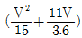
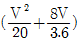
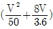
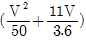
(정답률: 85%)
43. 3현시 구간의 열차간의 최소 운전시격 TR[sec]을 구하는 계산식은? (단, B : 폐색구간의 길이[m], L : 열차 길이[m], C: 신호 현시를 확인하는 필요한 최소거리[m], T : 선행 열차가 신호기 1호를 통과한 후 신호기 3호에 진행신호를 현시할 때 까지의 시간[sec], V : 열차속도[km/h]이다.)
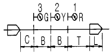
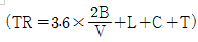
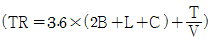
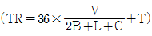
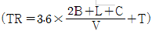
(정답률: 알수없음)
44. CTC(centralized traffic control)를 시행하여 직접 얻어지는 효과가 아닌 것은?
- 집중원방제어를 하므로 얻어지는 시간 절약
- 열차 운행정보를 즉시 알수 있는 이익
- 승무원에 대한 지령, 통고의 단순화
- 속도가 빠른 열차의 처리 곤란
(정답률: 100%)
45. 장내신호기의 설치위치는 당해 진로상 최외방의 대향분기기에서 외방 몇 m 이상으로 하는가?
- 100
- 150
- 200
- 250
(정답률: 100%)
46. 신호현시의 필요조건이 아닌 것은?
- 고장일 때에는 안전쪽이 아니라도 좋다.
- 현시가 간단하고, 충분한 확인거리를 가져야 한다.
- 같은 뜻의 신호는 가능한 같은 현시이어야 한다.
- 관계 기기와 연동이 되어 있어야 한다.
(정답률: 92%)
47. 신호케이블 접속 및 단말처리과정에 대한 설명으로 적당하지 않은 것은?
- 접속 슬리브를 사용하여 접속한다.
- 우산형 접속법으로 접속한다.
- 각 심선은 서로 교차되게 하여 1개소에 접속점이 집중되어서는 아니되도록 한다.
- 케이블의 단말은 압착용 터미날로 처리한다.
(정답률: 93%)
48. ATS-S장치에서 지상자 제어계전기의 특성으로 옳은 것은?
- 접점 : P.G.S접점
- 사용전압 : 직류 6V
- 정격전류 : 1A
- 코일저항 : 20℃에서 100Ω
(정답률: 84%)
49. 전기쇄정기 조사접점의 주된 역할은?
- 선로전환기 쇄정 확인조건
- 철사쇄정 조건
- 선로전환기 제어조건
- 신호현시 확인조건
(정답률: 77%)
50. 상치신호기에 대한 설명으로 옳은 것은?
- 서행, 서행예고 및 서행해제에 사용된다.
- 장내출발, 폐색, 유도, 입환에 사용된다.
- 선로의 고장 또는 수리를 하기 위해 사용된다.
- 서행신호에만 사용된다.
(정답률: 85%)
51. 건널목 2440 제어자의 제어구간의 길이는 몇 m 이상인가?
- 10
- 15
- 20
- 25
(정답률: 알수없음)
52. 궤도회로의 병렬부분에 설치하는 쟘파선의 적당한 설치 위치로 옳은 것은?
- 크로싱의 끝부분
- 레일의 중간부분
- 궤조절연 설치부분
- 쟘파선이 최단거리인 부분
(정답률: 91%)
53. 전기전철기에 사용되는 제어계전기는 유극 2위 자기유지형으로서 정격은 DC ①V ②mA, ③Ω의 것이 사용된다. ①, ②, ③에 해당되는 것은?
- ①6 ②12 ③200
- ①2 ②120 ③20
- ①24 ②120 ③200
- ①24 ②12 ③2
(정답률: 92%)
54. 열차를 출발시킬 때 역장 또는 차장이 출발신호기의 신호 확인이 곤란한 경우 설치하는 표지는?
- 열차출발표지
- 전철기표지
- 출발반응표지
- 가선종단표지
(정답률: 100%)
55. 연동장치 조작판에서 구성된 진로를 특별한 사유로 구분해정하고자 할 때 해당 전철기상의 구분진로 해정압구와 동시에 취급하는 압구는?
- ELOB
- ERBC
- ERB Ⅰ
- LOCB
(정답률: 알수없음)
56. 전자연동 시스템은 여러가지 장치로 구성되어 있다. 다음 중 전자연동 시스템의 구성요소가 아닌 것은?
- 통신장비부
- LDTS
- 표시제어부
- 연동장치부
(정답률: 100%)
57. 궤도회로 전원과 궤도사이에 삽입하는 한류장치의 작용 목적과 관계가 없는 것은?
- 궤도 단락에 대한 전류 제한
- 사용 전력량 즉, 소비전력의 감소
- 궤도계전기의 전압의 위상 조정
- 궤도계전기의 수전전압의 조정
(정답률: 100%)
58. 접근쇄정에 관한 설명으로 옳지 않은 것은?
- 접근궤도회로는 신호기 외방에 열차제동거리와 여유거리를 더한 거리 이상으로 한다.
- 해당 신호기를 취소한 경우 접근궤도회로에 열차가 있을 경우에는 해당 진로가 즉시 해정되지 않아야한다.
- 접근쇄정의 해정시분은 장내신호기 90초±10%, 출발신호기 및 입환신호기 30초±10%로 한다.
- 본선의 궤도회로는 출발신호기 또는 입환표지의 접근궤도회로로 사용할 수 없다.
(정답률: 85%)
59. 직류식 전기철도에서 지중 매설 금속체의 전식방지법을 열거한 것이다. 틀린 것은?
- 레일과 근접하여 보조 귀선을 설치한다.
- 절연물에 의한 전기적 차폐를 한다.
- 절연귀선을 시설하여 레일과 접속한다.
- 발전기의 (+)극을 귀선에 접속한다.
(정답률: 91%)
60. 단궤조식 궤도회로에 대한 설명으로 옳지 않은 것은?
- 절연이 적게 든다.
- 보안도가 낮다.
- 설치비가 저렴하다.
- 양 레일에 전차 귀선전류를 흘린다.
(정답률: 알수없음)
4과목: 회로이론
61.
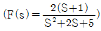
의 시간함수 f(t)는 어느 것인가- 2e-tcos2t
- 2etcos2t
- 2e-tsin2t
- 2etsin2t
(정답률: 10%)
62. 그림의 회로에서 a-b 사이의 전압 Eab 값은?
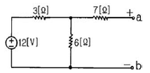
- 8[V]
- 10[V]
- 12[V]
- 14[V]
(정답률: 10%)
63. 상호 인덕턴스 100[mH]인 회로의 1차 코일에 3[A]의 전류가 0.3초 동안에 18[A]로 변화할 때 2차 유도 기전력[V]은?
- 5
- 6
- 7
- 8
(정답률: 10%)
64. 회로에서 인덕턴스 L을 변화시킬 때 일정교류 기전력에 대한 전전류 I의 궤적은?
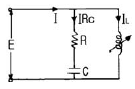
- 원점을 통하지 않는 반원이 된다.
- 원점을 통하는 반원이 된다.
- 직선도 아니고 원도 아니다.
- 원점을 통하지 않는 직선이 된다.
(정답률: 알수없음)
65. 임피던스 함수가
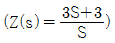
으로 표시되는 2단자 회로망은?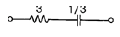
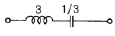
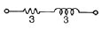
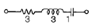
(정답률: 20%)
66. R=15[Ω], XL=12[Ω], XC=30[Ω]가 병렬로 접속된 회로에 120[V]의 교류전압을 가하면 전원에 흐르는 전류와 역률은 각각 얼마인가?
- 22[A], 85[%]
- 22[A], 80[%]
- 22[A], 60[%]
- 10[A], 80[%]
(정답률: 20%)
67. 저항 R, 리액턴스 X의 직렬회로에서 X/R=√3 일 때의 회로의 역률은?
- 1/√3
- 1/2
- 2/√3
- √3
(정답률: 25%)
68. 정전 콘덴서에 축적되는 에너지와 전위차와의 관계는?
- 직선
- 타원
- 포물선
- 쌍곡선
(정답률: 알수없음)
69. 어떤 회로에 e=50 sin(ωt+θ)[V]를 인가했을 때 i=4sin(ωt+θ-30°)[A]가 흘렀다면 유효 전력[W]은?
- 50
- 57.7
- 86.6
- 100
(정답률: 알수없음)
70. 내부 임피던스가 순저항 6[Ω]인 전원과 120[Ω]의 순저항부하 사이에 임피던스 정합을 위한 이상변압기의 권선비는?
- 1/√20
- 1/√2
- 1/20
- 1/2
(정답률: 10%)
71. 각 상 전압이 Va=40sinωt, Vb=40sin(ωt+90°), Vc=40sin(ωt-90°) 이라 하면 영상 대칭분의 전압은?
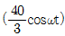
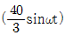
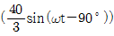
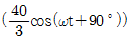
(정답률: 알수없음)
72. 저항 R, 인덕턴스 L, 콘덴서 C의 직렬회로에서 발생되는 과도현상이 비진동적이 되는 조건은? (직류전압인가시)
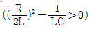
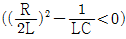
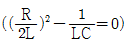
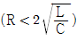
(정답률: 30%)
73. 기본파의 40[%]인 제 3고조파와 30[%]인 제5고조파를 포함하는 전압파의 왜형률은?
- 0.3
- 0.5
- 0.7
- 0.9
(정답률: 알수없음)
74. 단위충격함수(unit impulse function) δ(t)의 라프라스 변환은?
- 0
- -1
- ∞
- 1
(정답률: 17%)
75. 1차 지연 요소의 전달함수는?
- K
- K/S
- KS
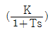
(정답률: 알수없음)
76. 저항 R=6[Ω]과 유도리액턴스 XL=8[Ω]이 직렬로 접속된 회로에서 ν=200√2sinωt [V]인 전압을 인가하였다. 이 회로의 소비되는 전력[KW]은?
- 3.2
- 2.2
- 1.2
- 2.4
(정답률: 17%)
77. R.L.C 병렬 공진회로에 관한 설명 중 옳지 않은 것은?
- 공진시 입력 어드미턴스는 매우 작아진다.
- 공진 주파수 이하에서의 입력전류는 전압보다 위상이 뒤진다.
- R가 작을 수록 Q가 높다.
- 공진시 L 또는 C 를 흐르는 전류는 입력전류 크기의 Q 배가 된다.
(정답률: 알수없음)
78. 상순이 a, b, c인 불평형 3상 전류 Ia, Ib, Ic의 대칭분을 Ia0, Ia1, Ia2라 하면 이때 대칭분과의 관계식 중 옳지 못한 것은?
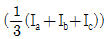
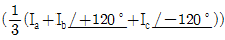
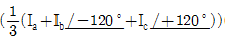
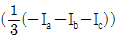
(정답률: 알수없음)
79. T 회로에서 단자
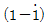
에서 본 구동점 임피던스 Z11은?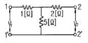
- 1[Ω]
- 2[Ω]
- 5[Ω]
- 6[Ω]
(정답률: 알수없음)
80.
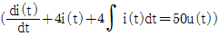
를 라플라스 변환하여 풀면 전류는? (단, t=0에서 i(0)=0,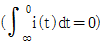
이다.)- 50e2t(a+t)
- et(1+5t)
- 1/4(1-et)
- 50te-2t
(정답률: 알수없음)